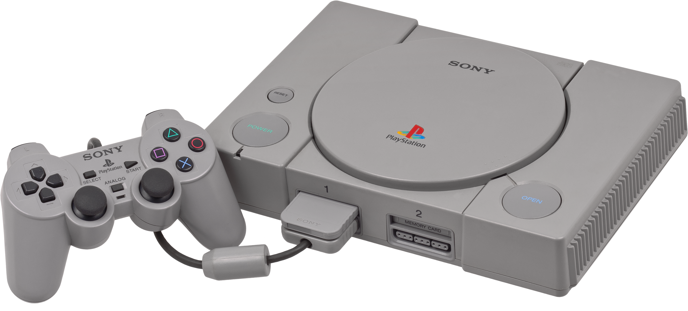
Quem sou eu?
Senior Developer
Interesses: Ciência cognitiva, teoria da computação, desenvolvimento de linguagens, desenvolvimento de jogos, programação bare-metal, IA local e deploy
Co-fundador da Common Lisp Brasil
lisp.com.br
luksamuk https://luksamuk.codes/ luksamuk
Visão Geral
- Contexto histórico
- Hardware
- Ferramentas de desenvolvimento
- Pipeline de gráficos
- Exemplo de código
- Limitações e workarounds
- Homebrews e links úteis
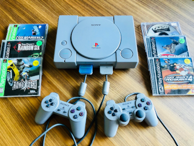
Contexto histórico
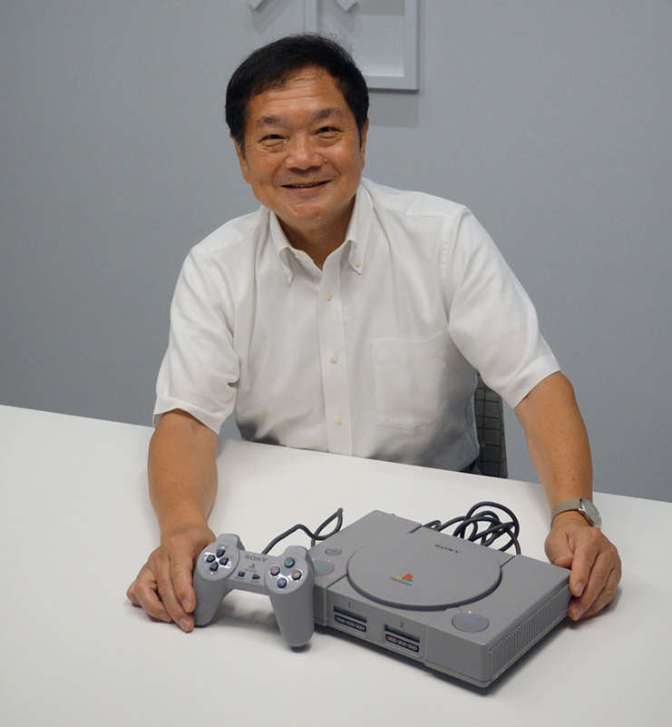
Figura: Ken Kutaragi e o Sony PlayStation
- Sony: Ken Kutaragi – engenheiro responsável pelo S-SMP (sound chip do SNES)
- Parceria Sony x Nintendo para um add-on de CD-ROM (Nintendo Play Station)
- Nintendo "trai" a Sony e fecha com a Philips
- Sony decide desenvolver seu próprio console
Quinta geração: a era 3D (1993)
Consoles de 32-bits, CD-ROM como mídia, polígonos na tela.
- Sega Saturn (1994)
- Sony PlayStation (1994)
- Nintendo 64 (1996)
Exceto o Nintendo 64 (cartucho).
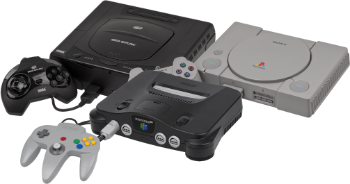


Sonic R (Sega Saturn), Crash Bandicoot (Sony PlayStation) e The Legend of Zelda: Ocarina of Time (Nintendo 64).
Ferramentas de desenvolvimento
Toolchain moderna
- Linguagem C
- Psy-Q + Nugget + GCC-MIPSEL
- Extensão PSX.Dev (VSCode)
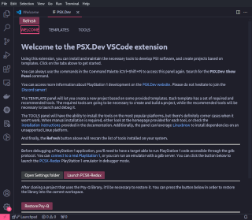
Figura: Dashboard da extensão PSX.Dev para VSCode.
Toolchains alternativas
- PSn00bSDK (C + ASM) – SDK open-source moderno
- PsyQo + EASTL (C++) – framework C++ sobre Psy-Q
- Assembly puro (
armips)
Nota: Psy-Q era o único SDK licenciado pela Sony. SDKs alternativos podem causar problemas de compatibilidade em emuladores antigos (ex: caso Sonic XA).
Demo: PSX.Dev do zero
Vamos ao vivo:
- Criar um projeto novo com a extensão PSX.Dev no VSCode
- Entender a estrutura:
main.c,Makefile,third_party/nugget - Build com
make– GCC-MIPSEL + Psy-Q convertido - Rodar no emulador (PCSX-Redux)
Hardware
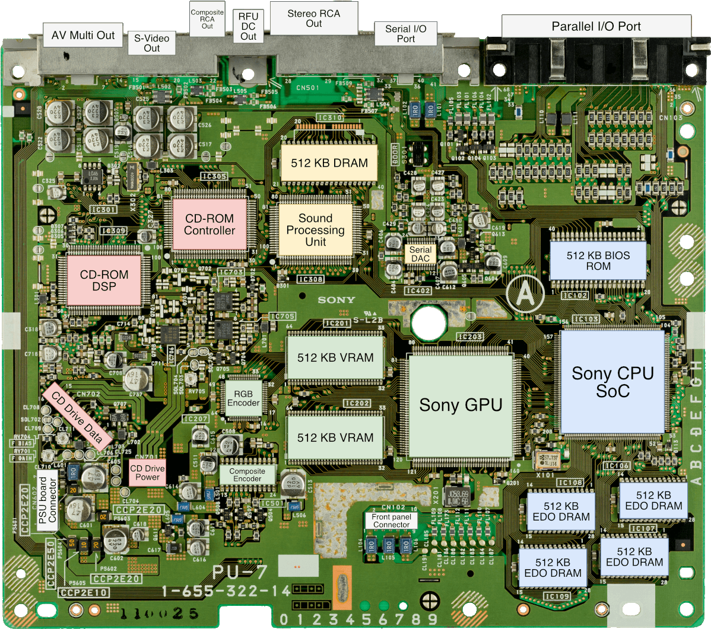
Figura: Placa-mãe de um PlayStation modelo SCPH-1000.
CPU
- LSI Logic MIPS R3000A 32-bit (RISC) @ 33.86 MHz
- Co-processadores:
- Cop0: System Control (cache, interrupções…)
- Cop2: Geometry Transformation Engine (GTE)
- MDEC: Motion Decoder (DSP para decodificar vídeo)
AO LADO: Dieshot do CXD8530Q (primeira revisão), tirado da apresentação do Ken Kutaragi na Hot Chips '99.
Fonte: PlayStation Dev Wiki
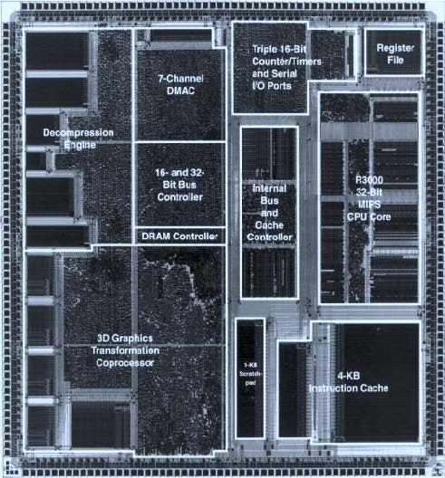
A especificação das CPUs MIPS 32-bit possuía um co-processador Cop1 para float, e um D-Cache para acesso à RAM.
O PlayStation 1 não possui nenhum dos dois.
Solução: fixed-points e scratchpad.
Memória, GPU e outras estruturas
- RAM: 2 MB EDO – acesso livre (sem segmentation faults), 1 KB scratchpad
- GPU: SCPH-9000 (Toshiba) – rasterização 2D apenas, 1 MB VRAM
- SPU: 16-bit, ADPCM, 24 canais, 512 KB SRAM
- CD-ROM: ISO 9660, CD-DA, CD-ROM XA
- MDEC: DSP para decodificar vídeo (FMVs)

Jogo: Spider-Man (PSX). Tente notar os artefatos (polygon jittering, z-fighting, t-junctions…).
Fixed-point arithmetic
- PSX não possui FPU (Cop1) –
floatem C é emulado em software (lento demais) - Solução: fixed-point – inteiro com bits reservados para a parte fracionária
- Formato mais comum no PSX: 20.12 (20 bits inteiro, 12 bits fracionário)
- 1.0 = 4096 (212), 0.5 = 2048, 0.25 = 1024
Operações básicas (formato 20.12):
// Soma e subtração: direto
int32_t a = 2048; // 0.5
int32_t b = 1024; // 0.25
int32_t c = a + b; // 3072 = 0.75
// Multiplicação: precisa compensar os bits fracionários
int32_t d = (a * b) >> 12; // 0.125
// Divisão: precisa pré-multiplicar
int32_t e = (a << 12) / b; // 2.0
Exemplo real (extraído do Sonic XA): a câmera trabalha em fixed-point, mas na
hora de desenhar, converte para pixels inteiros com >> 12:
// camera.c -- posição em 20.12, conversão para pixels
anchorx -= (camera->pos.vx >> 12) - CENTERX;
// util.c -- divisão em fixed-point
int32_t div12(int32_t a, int32_t b) {
return ((a << 12) / b) & ~(uint32_t)0xfff;
}
GTE (Geometry Transformation Engine)
- Cop2 (GTE): coprocessador dedicado a matemática 3D
- Rotação, translação, projeção em perspectiva, backface culling, Z médio
- Tudo em hardware – a CPU fica livre pra outra coisa
- Instruções específicas (não genéricas) pra operações 3D
Razão pela qual o PSX consegue colocar polígonos na tela.
O GTE opera com instruções específicas para operações 3D. O fluxo típico para um triângulo é:
- Carregar 3 vértices (
gte_ldv0,gte_ldv1,gte_ldv2) - Rotacionar, transladar e projetar (
gte_rtpt) - Backface culling (
gte_nclip) - Extrair coordenadas de tela (
gte_stsxy3) - Calcular Z médio para a ordering table (
gte_avsz3,gte_stotz)
Ver ao vivo: função RotAverageNclip3 em util.c no repositório do Sonic XA.
Gráficos
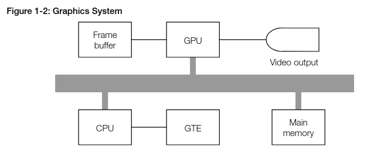
Fonte: PlayStation Hardware Reference
Entendendo o Frame Buffer
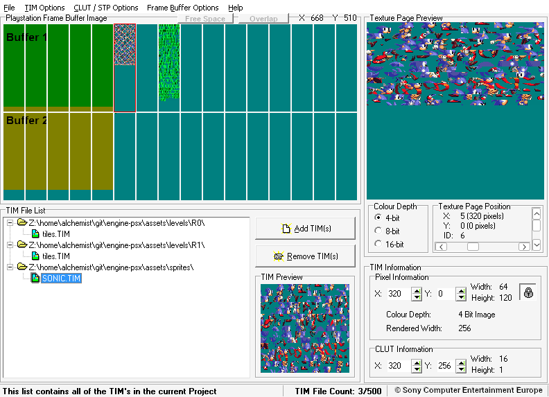
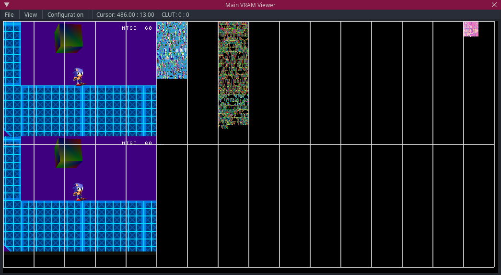
- Color depth: 24bpp, 15bpp ou usando CLUTs (4bpp ou 8bpp).
- Dividido em texture pages (TPAGEs).
- Comporta o double buffer da tela.
- Comporta texturas (tam. máx.: 256x256, precisão de 1 byte)
- Polígonos suportam gouraud shading…
O que é Gouraud shading?
- Henri Gouraud, 1971
- Interpolação contínua de cores, pode simular luz
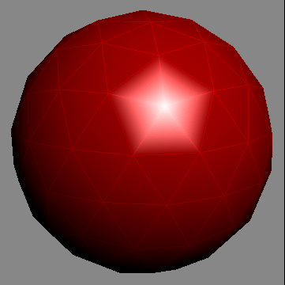
Esfera low-poly com reflexão especular.
Banjo, personagem de Banjo-Kazooie, como visto no Nintendo 64.
Ordering Table (em vez de Z-buffer)
A GPU do PSX é um rasterizador 2D. Ela não sabe qual pixel está à frente de qual. Não existe Z-buffer. Então, como desenhar polígonos na ordem certa?
A solução é a ordering table (OT): um array de linked lists indexado por
profundidade. Cada posição do array representa uma "fatia" de Z. O GTE
calcula o Z médio de cada triângulo (gte_stotz), e o triângulo é inserido na
posição correspondente da OT.
// Inserir primitiva na OT na posição calculada pelo GTE
addPrim(ot[otz], poly);
// Desenhar tudo, de trás (longe) para frente (perto)
DrawOTag(ot + OT_LENGTH - 1);
Exemplo de código
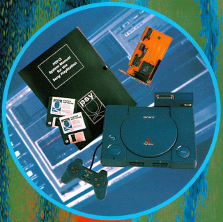
Figura: Detalhe do Psy-Q SDK.
Demo ao vivo: projeto gouraud-shading – cubo gouraud-shaded em C.
Limitações e workarounds
| Limitação | Workaround |
|---|---|
| Sem FPU (float em software) | Fixed-point 20.12 (4096 = 1.0) |
| Sem Z-buffer na GPU | Ordering table (linked lists por profundidade) |
| 2 MB de RAM | Scratchpad de 1 KB como "cache manual" |
| 1 MB de VRAM | Texturas, CLUTs e double buffer competem pelo mesmo espaço |
| CD-ROM (~300ms de seek) | Pre-load e streaming de dados |
| Sem perspectiva correction | Polygon jittering (artefatos visíveis) |
Sonic XA (engine-psx)
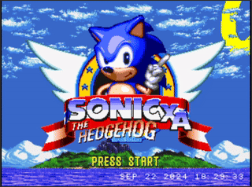


Fan-game de Sonic The Hedgehog utilizando técnicas do hardware do PSX.
O que programar pra PS1 te ensina
- Entender o hardware: sem abstraction leak pra te salvar
- Otimizar na camada certa: informed optimization
- Pensar em memória explicitamente: scratchpad = cache awareness manual
- Trade-offs conscientes: precisão vs velocidade, qualidade vs framerate
- Hoje, abstrações escondem tudo: garbage collector, GPU drivers, frameworks
- Nenhuma abstração é perfeita. Conhecer o que está embaixo te faz melhor em cima.
Links
- Cursos e Tutoriais
- Pikuma.com: PS1 Programming with MIPS Assembly & C
- Lameguy's PlayStation Programming Series
- Website do Schnappy
- Website do Alex Free: The Ultimate Guide to PSX CD-R's
- Comunidades
- Documentação
- PSX Spex (nova versão em HTML)
- PlayStation Dev Wiki (engenharia reversa)
- PlayStation Hardware Reference (oficial)
- Outros
Obrigado!
Acesse esta apresentação:
https://luksamuk.codes/talks/psx-programming-tech.html
lucasvieira at protonmail dot com luksamuk https://luksamuk.codes/ luksamuk